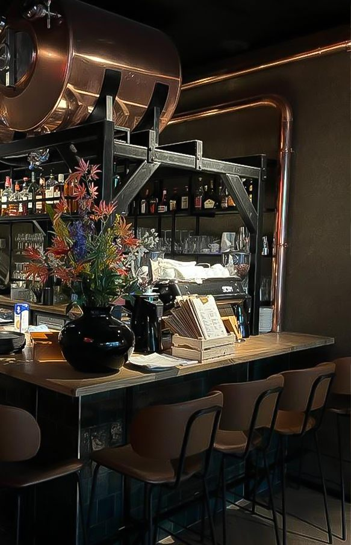
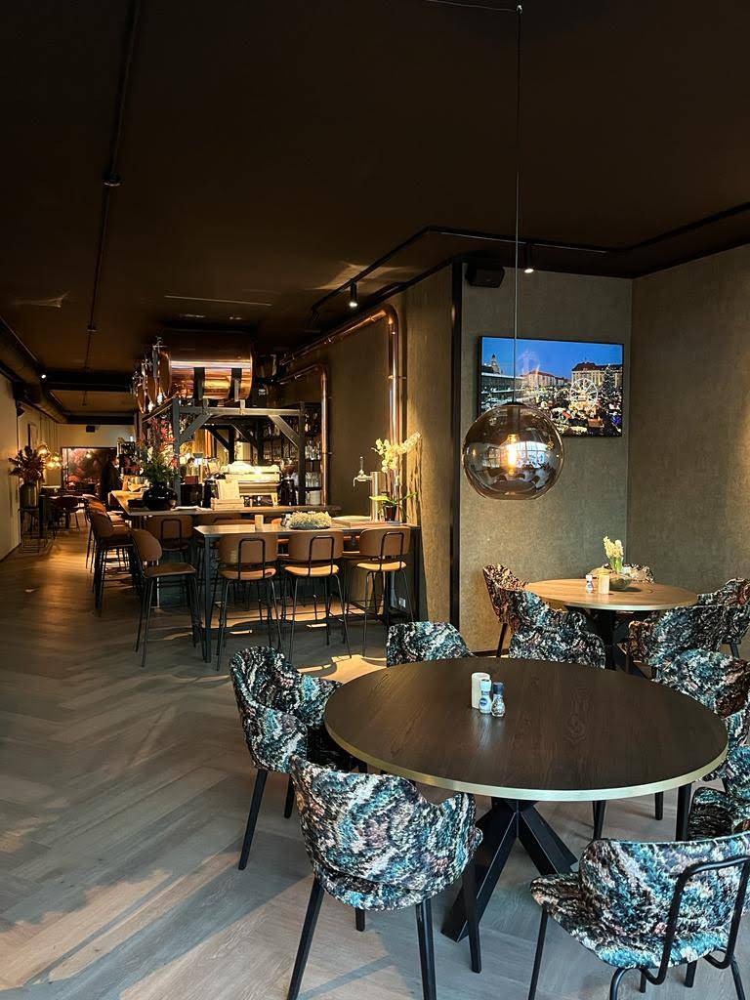
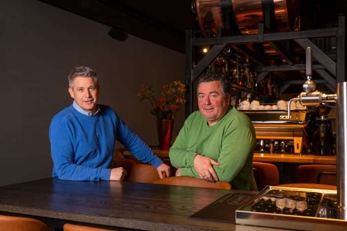

Het borrelt,het bruist.
Een Franse brasserie met Hollandse gastvrijheid, in een karakteristiek pand in het oude centrum van Zaltbommel. Voor koffie, lunch, een borrel of diner.
Woensdag t/m zondag open vanaf 11:00 uur

Koffie
Brasserie open vanaf 11:00
Lunch
12:00 – 16:00 uur
Borrel
Aan de bar of zelf tappen aan tafel
Diner
Vanaf 17:00 uur
Een gezellige brasserie in hartje Zaltbommel
In het sfeervolle oude centrum van Zaltbommel, in een karakteristiek pand met bijzondere verhalen, heeft onze brasserie een moderne en ontspannen uitstraling. Een unieke plek om vrienden, familie en collega’s te ontmoeten en samen te genieten.
Ons team maakt graag een feest van eten en drinken. Geniet van lekker eten, bijzondere bieren, barbites of verfijnde koffiesmaken. Daarnaast schenken wij heerlijke wijnen, die perfect passen bij onze gerechten. ’s Zomers kun je op het mooie terras genieten.
- Franse brasserie
- Bijzondere bieren & wijnen
- Terras in de zomer
- Rolstoeltoegankelijk

De kaart
Kom lunchen of dineren, of laat je verrassen door de specialiteiten van onze brasserie.
Kom lekker dineren bij de Heeren van Bommel. Diner vanaf 17:00 uur.
Voorgerechten
Vleesgerechten
Maak uw gerecht compleet met een verfijnde aanvulling: zwezerik 9,50 · ½ kreeft 21,50
Alle gerechten worden geserveerd met sla en frites. Extra mayonaise 1,50 · extra saus 3,50
Visgerechten
Maak uw gerecht compleet met een verfijnde aanvulling: zwezerik 9,50
Vegetarisch
Desserts
Kom lekker lunchen en laat je verrassen door de specialiteiten van onze brasserie. Van 12:00 tot 16:00 uur.
Sandwich
Tosti’s
Eiergerechten
zelf samenstellen tegen meerprijs
Belegd brood
keuze uit robuust wit of bruin
Maaltijdsalades
Warme gerechten
Specials
Kerst keuzemenu 2026
Geniet deze kerst van een sfeervol kerstdiner, gezellig samen of met de hele familie. Kies per gang uit wild, vlees, vis of vega.
Amuse
Voorgerecht
Tussengerecht
Soepje
Hoofdgerecht
Dessert
Wij wensen u een smakelijke kerst en een sfeervol samenzijn aan tafel.
In onze keuken werken we met allergenen. Heeft u een voedselallergie? Vraag naar onze allergenenkaart.
Gewoon een borrel? Ook dat kan.
Zin in alleen een borrel met vrienden of bekenden? Schuif aan aan de sfeervolle bar voor bijzondere bieren, een goed glas wijn en barbites.
Zelf tappen aan tafel
Voor vrienden die samen de tap graag in eigen hand nemen, is er de mogelijkheid om zelf aan tafel bier te tappen. Reserveer dit unieke concept van tevoren door contact met ons op te nemen.
Bel (0418) 78 30 00
De Heeren van Bommel
Bij De Heeren van Bommel ervaar je de gezellige sfeer van een Franse brasserie gecombineerd met de Hollandse gastvrijheid van de vrienden Gideon en Lodewijk. Kom lunchen, dineren, borrelen of een kop koffie drinken.
Gezelligheid en kwaliteit, dat streven wij als team na. Bij de Heeren van Bommel draait alles om goed eten en gezelligheid.
Gideon en Lodewijk verwelkomen je graag in hun brasserie in hartje Zaltbommel!
Werken bij de Heeren
Je gaat niet zomaar ‘ergens’ werken. Wil je meer ervaring opdoen binnen de horeca en je vaardigheden verder ontwikkelen? Je komt terecht in een gezellig en professioneel team waar kennis en kunde gewaardeerd worden.
We zijn op zoek naar uitbreiding van ons team en hebben de volgende vacatures open staan:
- Sous-chefSolliciteer per mail
- KokSolliciteer per mail
Heb jij passie voor je vak en zoek je een nieuwe uitdaging in een leuk team? Stuur je cv met motivatie naar info@heerenvanbommel.nl.
Reserveren & contact
Openingstijden
| Maandag | gesloten |
| Dinsdag | gesloten |
| Woensdag | vanaf 11:00 |
| Donderdag | vanaf 11:00 |
| Vrijdag | vanaf 11:00 |
| Zaterdag | vanaf 11:00 |
| Zondag | vanaf 11:00 |
Brasserie vanaf 11:00 · lunch 12:00 – 16:00 · diner vanaf 17:00
Reserveren
Reserveer telefonisch of per mail, we zien je graag.
(0418) 78 30 00Info@heerenvanbommel.nl
Met een groep van meer dan 12 personen? Neem telefonisch of per mail contact met ons op.
Adres & parkeren
Waterstraat 21
5301 AH Zaltbommel
Ons historisch pand is rolstoeltoegankelijk.
- Parkeerterrein Veerweg± 3 minuten lopen, betaald parkeren
Veerweg 1, 5301 CK Zaltbommel - Parkeerterrein Beersteeg± 7 minuten lopen, gratis parkeren
Beersteeg 4, 5301 HR Zaltbommel